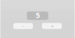

Chapter 1 - What are actions?
Some data-structures describe the state of an application. Those structures should not be freely modifiable.
Instead, they should be provided with Actions.
An action is a piece of data that describes how the state of the program should change.
An action can be applied to a datastructure.
Counter
This tutorial will introduce the two most important concepts of the actions library:
A State describes (a part) of the state of an application.
Actions describe how the state of an application should change.
Some setup
First make sure you are using the actions crate. Make sure to have actions as a dependency in your Cargo.toml file. If you are unfamiliar with Cargo, check out the Cargo book).
[dependencies]
actions = "0.2.0"
Then make sure to specify actions as a dependency in your project, and import the State trait.
# #![allow(unused_variables)] #fn main() { use actions::State; #}
Building the counter
One of the easiest examples for explaining actions is a counter. The counter has two buttons: an decrement button, and an increment button.

Our task is to write the logic for the counter. Easy!
Step one: Defining the State
One of the most important aspect of the counter is storing the value displayed in the counter. We will use an integer to store the value.
As the counter holds just one value, it can be described like this:
# #![allow(unused_variables)] #fn main() { struct Counter(u32); #}
Step two: Defining the actions
Maybe even more important than the counter are the two buttons.
The decrement button should decrement the counter by 1, and the increment button should increment the counter by 1.
Incrementing and decrementing are actions. It is immediately clear how executing those actions influences the State and therefore the state of the application.
Let's convert these actions into Rust-code.
# #![allow(unused_variables)] #fn main() { enum CounterAction { Increment, Decrement, } #}
That's it! You've defined your actions.
Step three: Defining the behaviour of the State
Step three is defining how the state of the State should change when an action is executed.
Handling errors
To make sure the counter does not go past the maximum or minimum value, we will return an eror if it would. Errors are easily represented using an enum:
# #![allow(unused_variables)] #fn main() { enum CounterError { MinValueReached, MaxValueReached, } #}
We will use this error-type later.
Implementing the State trait
Counter is a State, as it describes the state of our application. Therefore, we will implement the State trait for it.
# #![allow(unused_variables)] #fn main() { impl State for Counter { // Define what actions influence this State type Action = CounterAction; type Error = CounterError; // The function that applies the action! fn apply(&mut self, action: &CounterAction) -> Result<(), CounterError> { match action { CounterAction::Increment => match self.0.checked_add(1) { Some(new_value) => self.0 = new_value, None => Err(CounterError::MaxValueReached)?, }, CounterAction::Decrement => match self.0.checked_sub(1) { Some(new_value) => self.0 = new_value, None => Err(CounterError::MinValueReached)?, }, }; Ok(()) } } #}
Note that the apply-function is returning the inverse of the action that was performed. This can be used to 'undo' the action (will be discussed in another tutorial).
If the action has no effect on the state of the State, the apply function should return None.
Testing the counter
That was all you need for the logic of the counter. Now, let's test it.
# #![allow(unused_variables)] #fn main() { fn test() -> Result<(), CounterError> { // Create a new counter with an initial value of 0. let mut counter = Counter(0); counter.apply(&CounterAction::Increment)?; counter.apply(&CounterAction::Increment)?; counter.apply(&CounterAction::Decrement)?; assert_eq!(1, counter.0); counter.apply(&CounterAction::Decrement)?; // This should cause our own error message to be printed, // because the counter uses an unsigned integer (cannot be negative). counter.apply(&CounterAction::Decrement)?; Ok(()) } #}
It works! You can find the final code from this tutorial here.
Chapter 2 - A chain of actions
Chapter 3 - Undo and Redo
TODO.
For now, please refer to the timeline example.
Chapter 3 - Merging actions
Imagine this scenario.
You have got a very simple program. A counter. The user can enter an operation (increment or decrement) and a value. The user could, for example say: increment the counter by 5. Then the user decrements the counter by 4. Lastly, the user performs an increment of 3.
We can use an enum to represent those actions.
# #![allow(unused_variables)] #fn main() { enum MyAction { Add(u8), Subtract(u8) } #}
But the user is not satisfied. The user wants to automate this time-consuming process. Simple!
We just record the actions and store them. If the user wants to perform all 3 actions, the user can just press one button to perform all 3 actions. They will be executed sequentially.
# #![allow(unused_variables)] #fn main() { let actions = vec![ MyAction::Add(5), MyAction::Subtract(4), MyAction::Add(3) ]; #}
"That is dumb, it could just be 1 single action", you say? Yes, it is dumb. That is why actions enables you to merge actions by creating a Chain of actions. You provide the merge-logic. This is how that would look like for our example:
# #![allow(unused_variables)] #fn main() { impl Merge for Action { fn merge(&self, previous: &MyAction) -> MergeResult<Self> { match self { // If the current action is incrementing by val MyAction::Add(val) => match previous { // If the previous action was decrementing by val2 MyAction::Subtract(val2) => // Then return a new 'merged' action which // increments by (val - val2) MergeResult::Merged( MyAction::Add(val - val2) ), // Etc.. MyAction::IncrementBy(val2) => MergeResult::Merged( MyAction::Add(val + val2) ), }, MyAction::DecrementBy(val) => match previous { MyAction::IncrementBy(val2) => MergeResult::Merged( MyAction::Add(val2 - val) ), MyAction::DecrementBy(val2) => MergeResult::Merged( MyAction::Subtract(val + val2) ) }, } } } #}
Please note that this merge is not the optimal solution, because it is possible to end up with either CounterAction::Add(0) or CounterAction::Subtract(0), which could be entirely removed.
To solve that issue, you can return other MergeResults. You can return MergeResult::CancelsOut, for example. You can read more about the different MergeResults in the documentation.